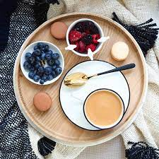
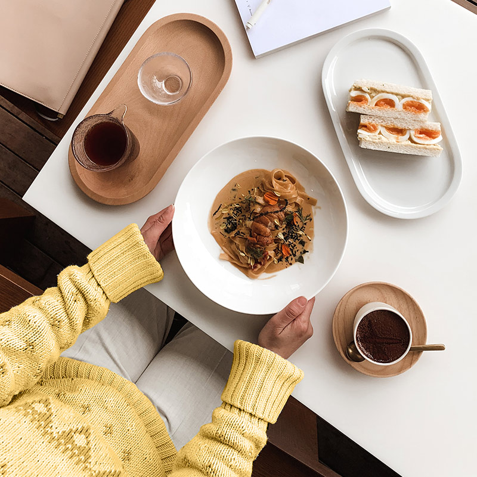
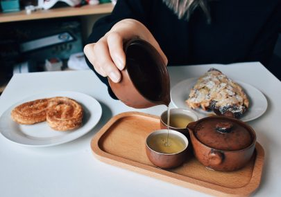

Welcome to Peduase Chop House. We are delighted to have you here, ready to indulge your taste buds in a culinary journey like no other. As you step through our doors, be prepared to embark on a gastronomic adventure that will tantalize your senses and leave you craving for more. Our passionate team of talented chefs has curated a menu that showcases the finest ingredients, exquisite flavors, and innovative culinary techniques. From the first bite to the last, each dish is crafted with utmost care and precision to deliver an unforgettable dining experience. Whether you're joining us for a romantic dinner, a family celebration, or a casual get-together with friends, our warm and inviting ambiance provides the perfect setting to create cherished memories. Relax, unwind, and let our attentive staff take care of your every need, ensuring that your time with us is nothing short of extraordinary. At Peduase Chop House, we believe that food has the power to bring people together, creating moments of joy, laughter, and connection. We are committed to exceeding your expectations and making your visit truly exceptional. Thank you for choosing us as your dining destination. Get ready to savor every moment, as we embark on a culinary journey that will leave an indelible mark on your palate. Welcome to Peduase Chop House where gastronomy meets perfection.
Experience the epitome of culinary excellence at Peduse Chop House.From the moment you step into our establishment, you will be transported into a world where every aspect of your dining experience has been meticulously curated to create an atmosphere of sophistication, comfort, and unparalleled taste. Prepare to be captivated as our skilled chefs, armed with their culinary mastery, create gastronomic works of art that will tantalize your senses and leave you craving for more. Each dish is a harmonious symphony of flavors, textures, and presentation, meticulously crafted to deliver an extraordinary culinary journey. Our dedicated staff is committed to providing impeccable service, ensuring that your every need is anticipated and met with a smile. From recommending the perfect wine pairing to accommodating dietary preferences, we strive to create a seamless and memorable dining experience that exceeds your expectations. Whether you're celebrating a special occasion, embarking on a romantic evening, or simply seeking a respite from the ordinary, Peduse Chop House offers a haven of refinement and indulgence. Immerse yourself in the elegant ambiance, savor the exquisite flavors, and let time stand still as you relish every moment. We invite you to embark on a culinary adventure that will ignite your taste buds, awaken your senses, and leave a lasting impression.
What is our Goal
At Peduse Chop House, our goal is to redefine the art of dining by providing an exceptional culinary experience that transcends expectations. We strive to create a haven of gastronomic excellence, where every aspect of your visit is carefully crafted to deliver unmatched satisfaction. From the moment you walk through our doors, we aim to enchant your senses with a harmonious fusion of flavors, textures, and impeccable presentation. Our dedicated team is committed to providing impeccable service, ensuring that each guest feels valued, pampered, and welcomed. With our passion for culinary innovation and commitment to excellence, our goal is to create lasting memories and become your preferred destination for unparalleled dining experiences.
At Peduase Chop House, we take immense pride in serving our guests with dedication, ensuring their best interests are at the forefront of everything we do. Our mission is to create an atmosphere of warmth, hospitality, and genuine care. We personalize each dining experience, catering to individual tastes, dietary needs, and special requests. Our attentive team anticipates your needs, exceeding expectations from start to finish. With the finest ingredients and skilled chefs, we create culinary masterpieces that showcase flavors and innovation. Dining at Peduase Chop House is an experience to be cherished, where moments of delight, culinary bliss, and heartfelt connections await. Welcome to a place where your satisfaction is our genuine pleasure.
